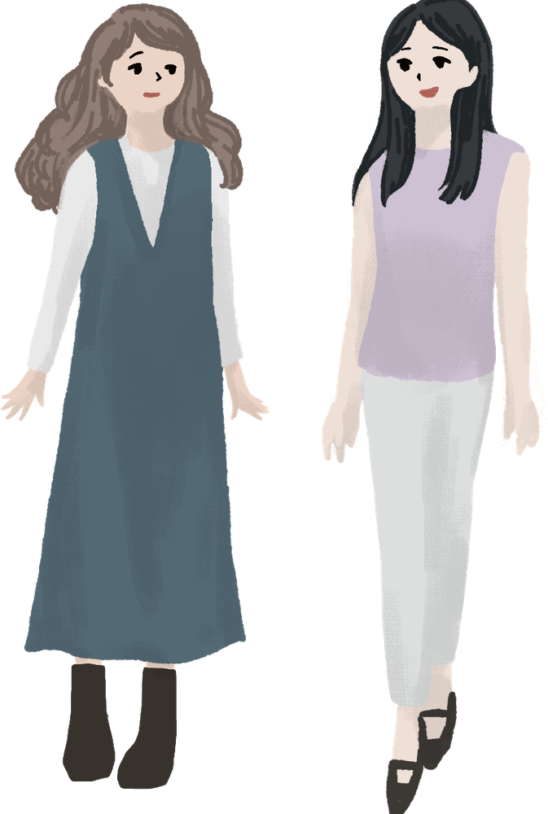
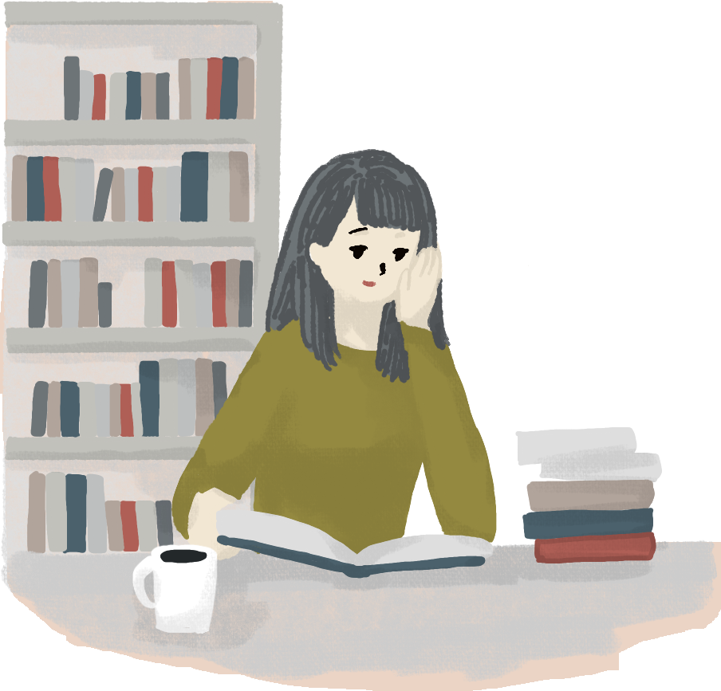

INTERVIEW
「好き」が「研究テーマ」に変わった日
LITERATURE文学部 日本文学科 3年 Aさん
- Q.{{ q.q }}
- {{ q.a }}
STUDENTS
学部別に見る

ALUMNAE
卒業生メッセージ

「{{ a.quote }}」
{{ a.body }}
INTERVIEW
LITERATURE文学部 日本文学科 3年 Aさん
STUDENTS

ALUMNAE

「{{ a.quote }}」
{{ a.body }}